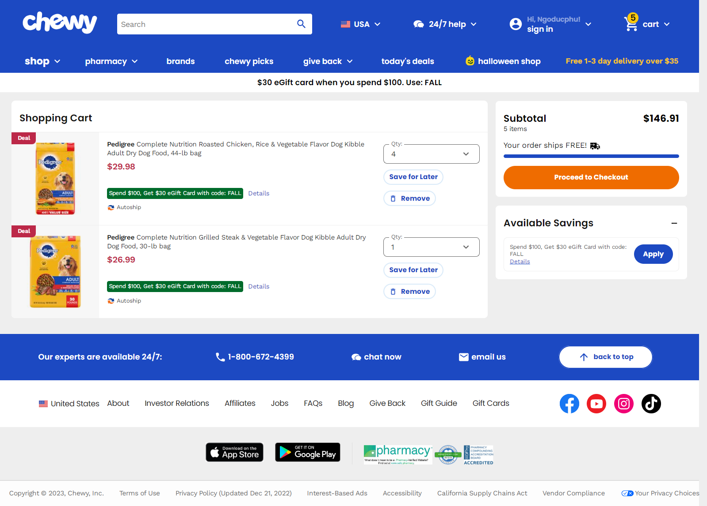
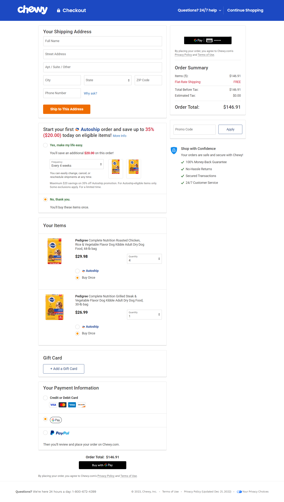
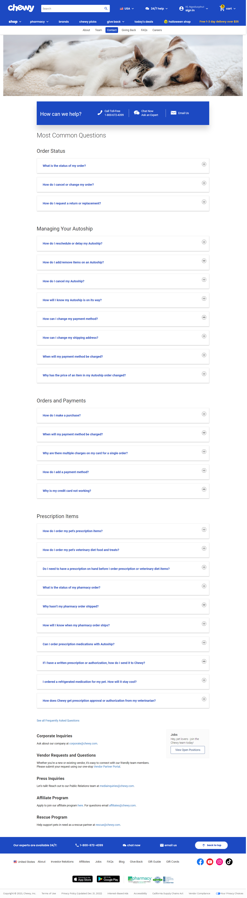
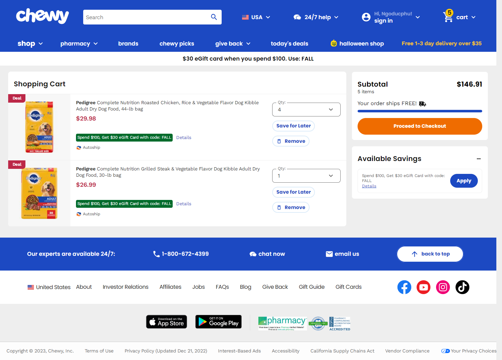
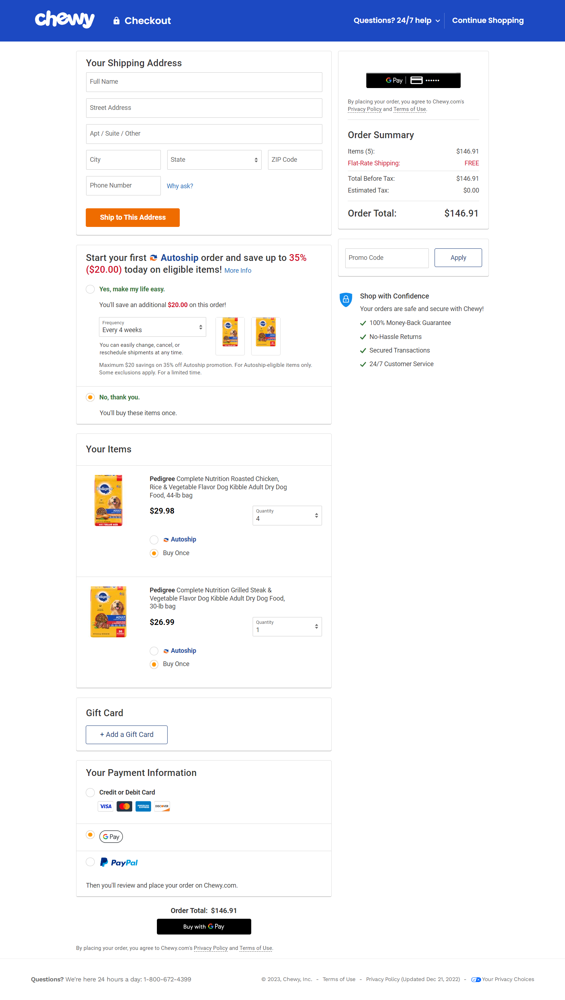
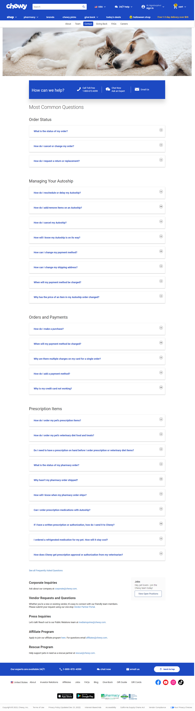
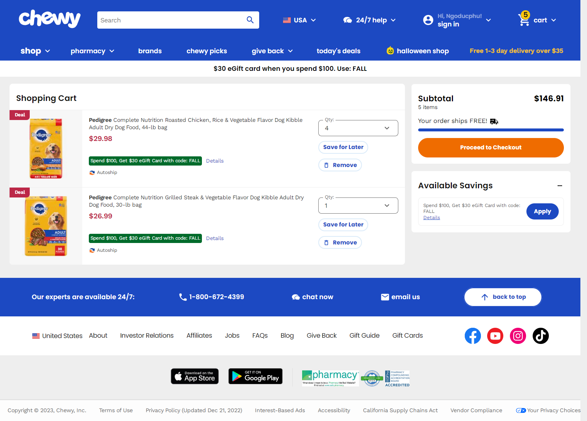
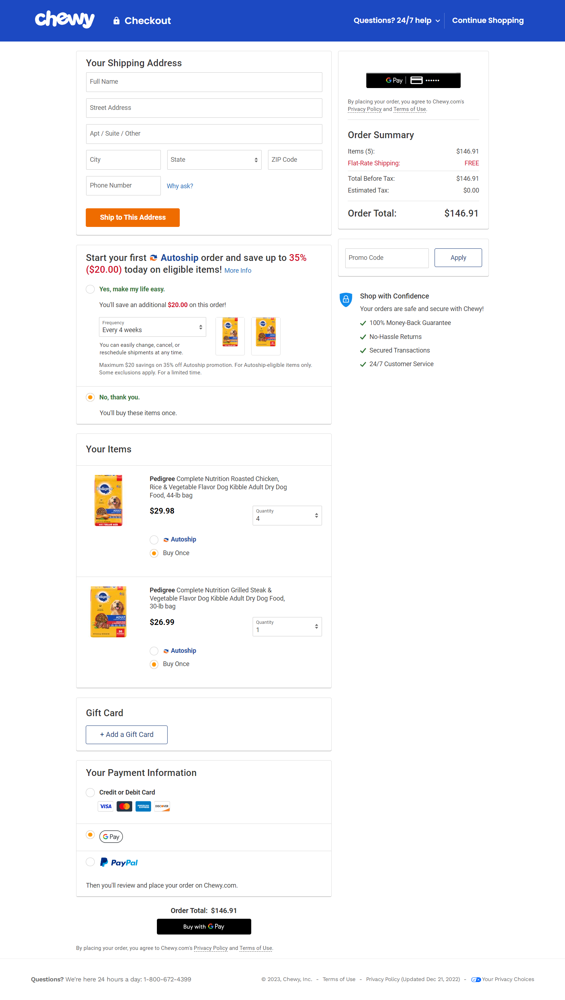
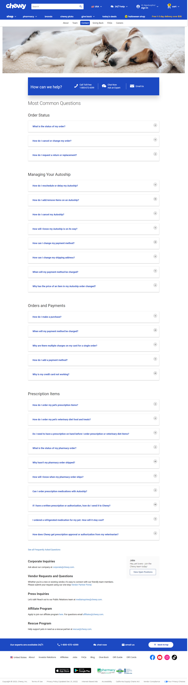

Details Products

 








1- User persona là gì và tại sao chúng lại quan trọng trong thiết kế UX/UI? 2-Những yếu tố nào cần phải được xem xét khi tạo một user persona? 3-Bạn có thể mô tả các bước để tạo một user persona không? 4-Làm thế nào để xác định mục tiêu và nhu cầu của user persona? 5- User persona có ảnh hưởng như thế nào đến quyết định thiết kế?